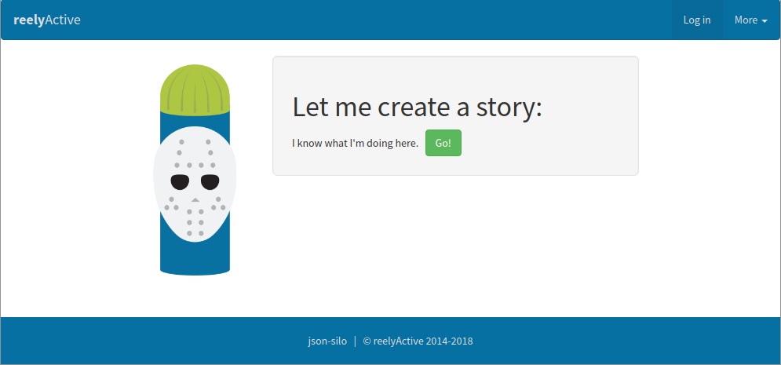
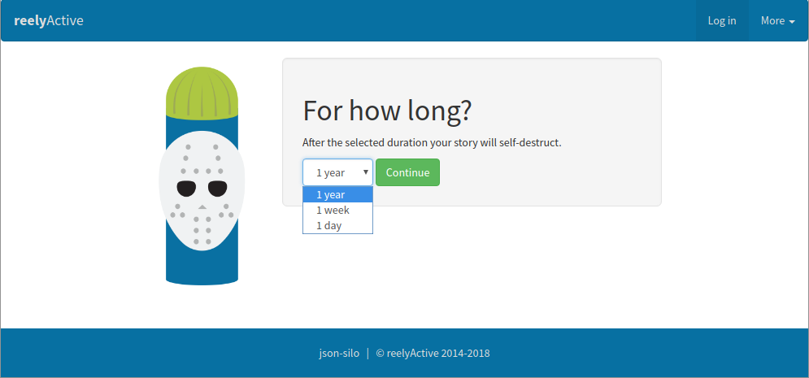
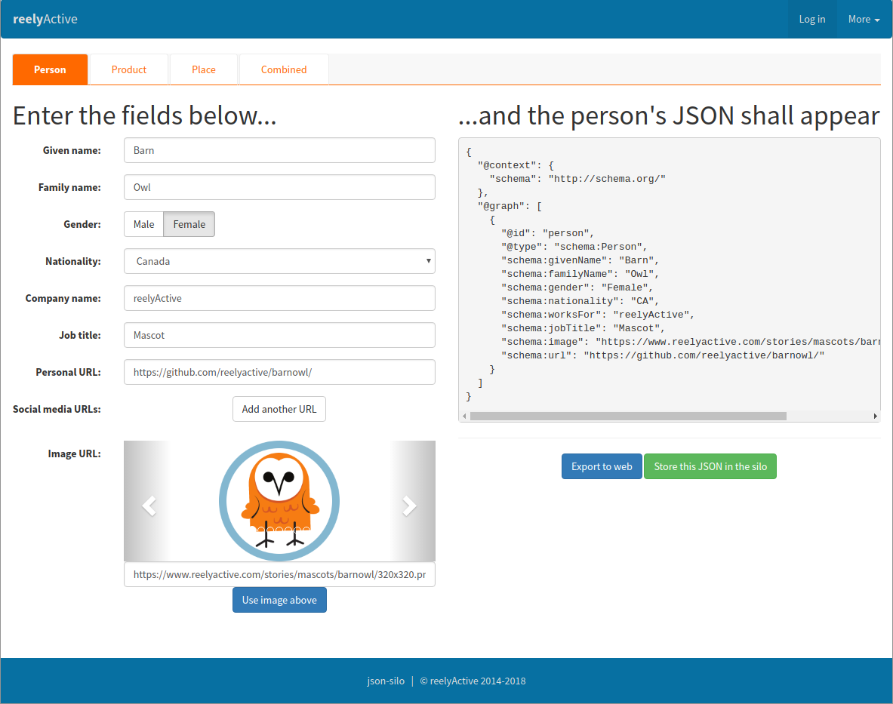
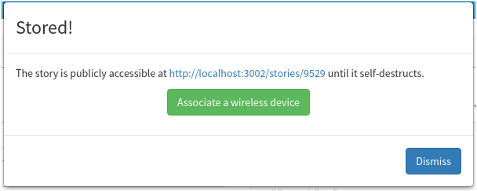
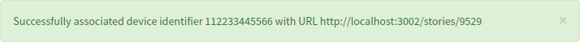
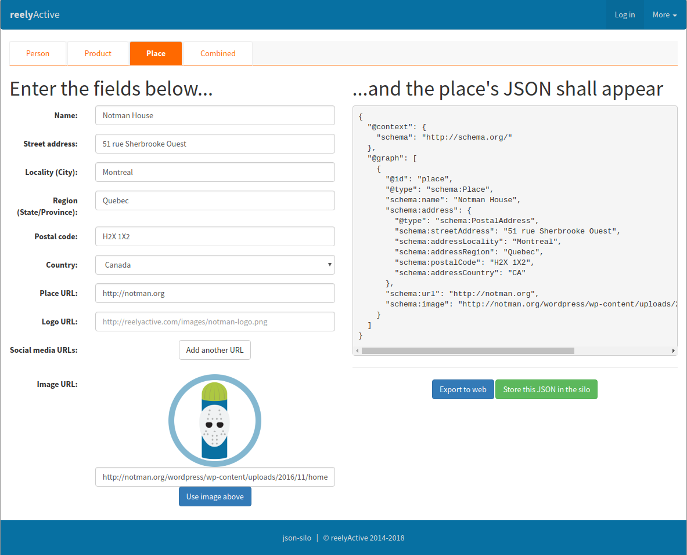
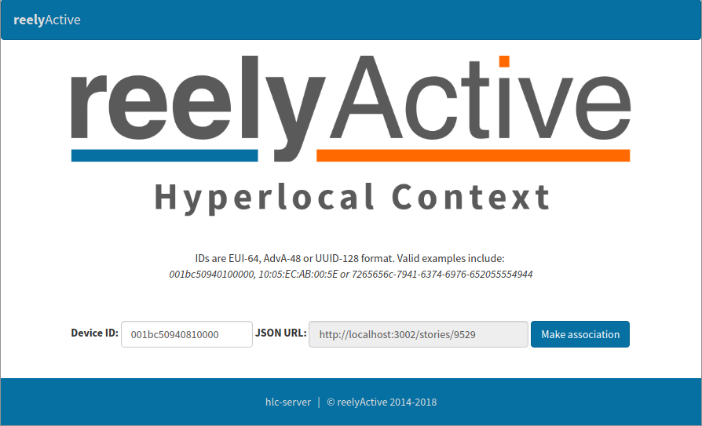
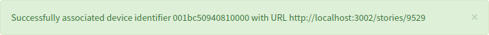
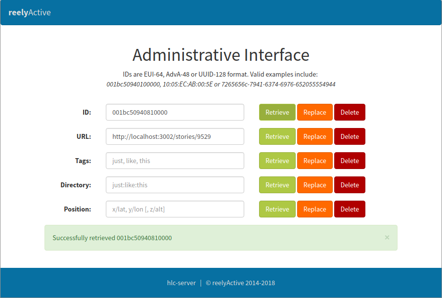
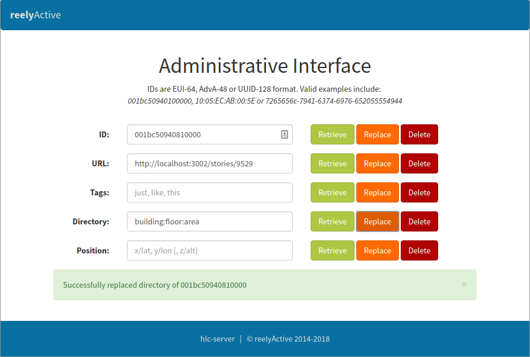

Create and associate stories
Use the json-silo and hlc-server packages to represent and detect people, products and places
This tutorial complements the Install an offline demo tutorial which includes both the hlc-server and json-silo open source packages. While the default settings of that tutorial are observed, the methods here nonetheless apply to any installation of the two software packages.
Create a person and associate with a transmitter device
Browse to localhost:3002 or to the specific address at which the json-silo is hosted. The landing page should appear similar to the following:
Click on Go! to create a story.
Select how long the story should exist before it self-destructs and click on Continue.
Enter the pertinent fields — at a minimum, the following are used by most web applications:
- Given name
- Last name
- Image URL
Click Store this JSON in the silo to create the story.
A pop-up will confirm that the story has been stored, and indicate the address at which it can be retrieved. Click Associate a wireless device to proceed.

Enter the device identifier (ex: static 48-bit Bluetooth Low Energy MAC or advertiser address). Click Make association to complete the association.
An alert will confirm that the association was successful. The person's story is now associated with the transmitter device.
Create a place and associate with a receiver device
Browse to localhost:3002 or to the specific address at which the json-silo is hosted. The landing page should appear similar to the following:
Click on Go! to create a story.
Select how long the story should exist before it self-destructs and click on Continue.
Enter the pertinent fields — at a minimum, the following are used by most web applications:
- Name
- Image URL
Click Store this JSON in the silo to create the story.
A pop-up will confirm that the story has been stored, and indicate the address at which it can be retrieved. Click Associate a wireless device to proceed.
Enter the device identifier (ex: 64-bit identifier of reelceiver or Owl-in-One). Click Make association to complete the association.
An alert will confirm that the association was successful. The place's story is now associated with the receiver device.
It is also good practice to associate a directory with each receiver. Browse to localhost:3001/admin or to the specific address at which the hlc-server admin page is hosted and log in (the default password is admin).
Enter the ID of the receiver device from the previous step and click the adjacent Retrieve button. You should see the URL of the story correctly associated, as below.
Enter the directory to be associated with the receiver device and click the adjacent Replace button. You should see an alert indicating that the directory was successfully replaced, as below.
The receiver device is now associated with both the place's story and a hierarchical directory structure, both of which are required for most web applications.
Prefer Software-as-a-Service?

Our Pareto platform combines even more features and functionality with the convenience of SaaS.
What's next?
You can easily build your own custom demo by following our Build web apps with beaver.js tutorial.